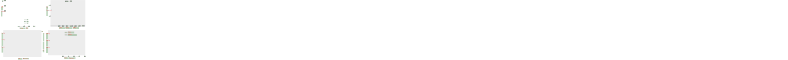
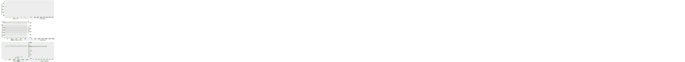

Schematic of preparation of Mn-oleate precursor, direct coating of precursor solution on a conducting substrate, and thermal calcination to directly grow MnO@C nanocomposite on the substrate surface.
Figure 1
(a, b) SEM images of MnO@C nanocomposite on a Ni foam substrate. (c) TEM, (d) HRTEM images and (inset) SAED pattern of MnO@C nanocomposites. (e) XRD pattern of MnO@C nanocomposite on a Ni foam substrate. (f) N 2 sorption isotherm and corresponding pore size distribution curve (inset) of MnO@C nanocomposite.
Figure 2

LIB measurement of MnO@C nanocomposite on Ni foam. (a) Cyclic voltammograms for the first 3 cycles. (b) Voltage profiles at a current density of 100 mA g −1 for the 1 st, 2 nd, 50 th and 80 th discharge/charge cycles. (c) Cycling performances of directly growth (red curve) and post-coating (black curve) of MnO@C nanocomposite on Ni foams. The Coulombic efficiency of the direct growth method is also displayed (green curve). (d) Capacity retention at different charge/discharge rates from 0.1–2 A g −1.
Figure 3

Supercapacitor measurement of MnO@C nanocomposite on Ni foam. (a) Cyclic voltammograms at different scan rate of 25–500 mV s −1. (b) Charge-discharge curves at different current densities. (c) Specific capacitance dependence on the current density from 0.5–40 A g −1. (d) Repeated charge-discharge curves and (e) capacity retention of 2500 cycles at 1 A g −1. Inset: the charge-discharge curves of the 50 th, 1000 th and 2000 th cycles. (f) Capacity retention during repeated folding with an angle of almost 180° for 70 times. Inset: optical photos of the folded and extended electrodes of MnO@C nanocomposite on Ni foam.
Figure 4
Sensing and cellular measurement of MnO@C nanocomposite on Ti foil. (a) Cyclic voltammograms in (i) 0, (ii) 0.4, and (iii) 2 mM of H 2O 2 in PBS solution. (b) Current-versus-time plot with repeated addition of 200 μM of H 2O 2 for directly growth (red curve) and post-coating (black curve) of MnO@C nanocomposite on Ti foil. (c) Concentration dependence plot of current change at different H 2O 2 concentrations. Inset: linear fitting for concentration range of 2 μM–2.4 mM. (d) Cellular assay of H 2O 2 detection for 293T cells and HeLa cells. Three conditions are presented for each cell lines: buffer without PMA or catalase (grey bars), buffer with PMA only (red bars), and buffer with both PMA and catalase (blue bars).
Figure 5
(a) Nyquist plots of MnO@C nanocomposites as LIB anodes, for the direct growth method (red curve) and the post-coating method (black curve). (b) Nyquist plots of MnO@C nanocomposites as supercapacitor anodes, for the direct growth method (red curve), the post-coating method (black curve), and after removal of carbon coating for the direct grown thin films (blue curve). Inset: close up of the high frequency region.